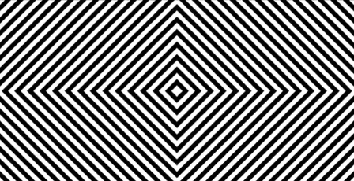

THE END
Our visual system remains too limited to tackle all of the information our eyes take in.
For that our brain would need to be bigger than a building, and still then it wouldn’t be enough.
Seeing, then, is certainly not always believing.
20